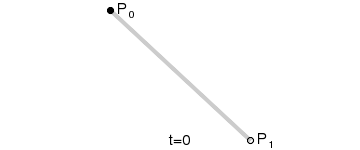
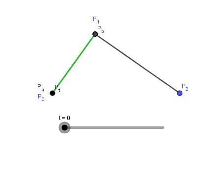
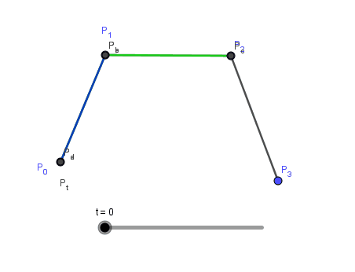
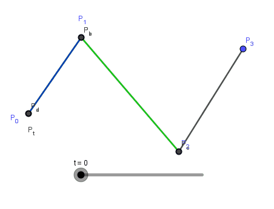

0x01 线性贝塞尔公式：
其等同于线性插值。

0x02 二次贝塞尔曲线
二次方贝兹曲线的路径由给定点P0、P1、P2控制，这条线由下式给出：

0x0201 推导
在二阶贝塞尔曲线中，已知三点恒定（P0,P1,P2），设定在P0P1中的点为Pa，在P1P2中的点为Pb，Pt在PaPb上的点，这三点都在相同时间t内做匀速运动。
由公式(1)可知
将公式 (2) (3) 代入公式 (4) 中，可得：
动画如图：

0x03 三次贝塞尔曲线


0x0301 推导
// 代入
0x04 一般参数形式的贝塞尔方程
0x05 Python程序实现
1 | class Point(object): |